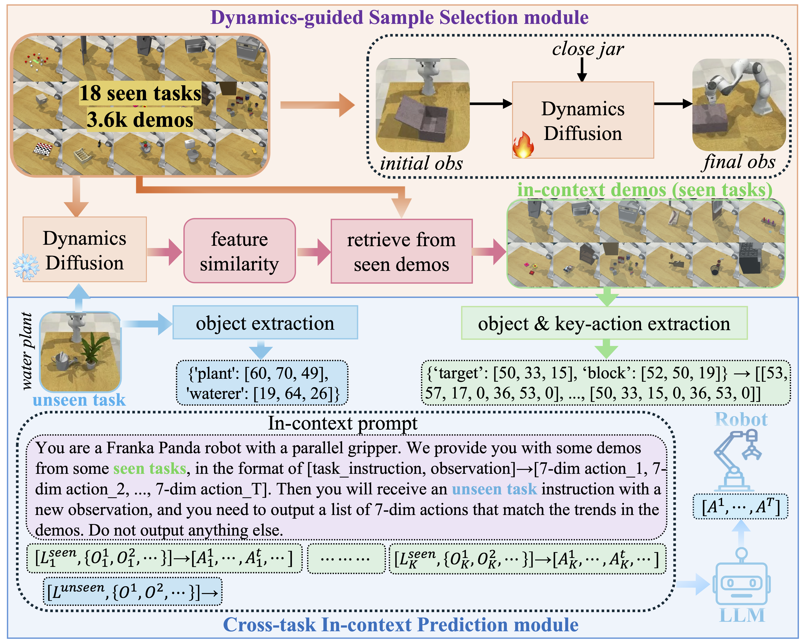
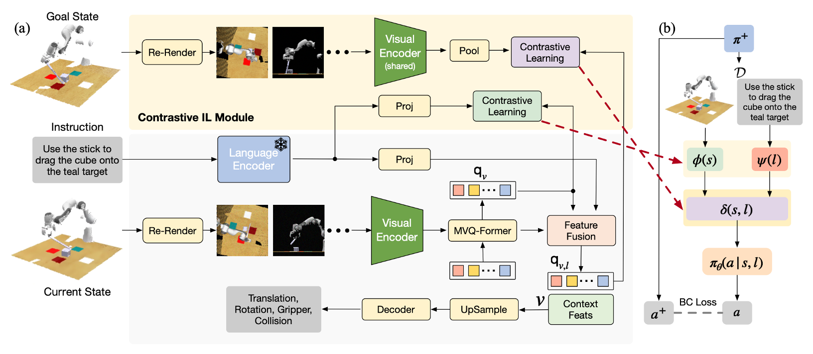

2026
AIDA–OWMMOverview forthcoming
Look Before You Move: Agent-Interface-Aligned Supervision for Open-World Mobile Manipulation
Paper, project & code forthcoming.
EMBODIED INTELLIGENCE
Ph.D. Candidate · HKUST (Guangzhou)
I am a Ph.D. candidate in Artificial Intelligence at the Hong Kong University of Science and Technology (Guangzhou), advised by Junwei Liang and co-supervised by Ying-Cong Chen. I obtained my M.Phil. degree in Artificial Intelligence from the same university in 2024 under the supervision of Junwei Liang. My research focuses on embodied AI for long-horizon mobile manipulation. I am particularly interested in how robots can reason through complex tasks and generalize to new tasks and environments.
I received my bachelor's degree in Finance from Sun Yat-sen University and worked in finance for four years, primarily advising companies on IPOs in the U.S. market.
Inspired by the belief that technology can change the world for the better, I transitioned to AI research. I hope to help build a future where more people can live in peace and happiness.
AIDA-OWMM accepted to CoRL 2026.
Paper, project & code forthcoming.


TTS / Scene graphs / VLM reasoning
SLAM / Object detection / VLM reasoning